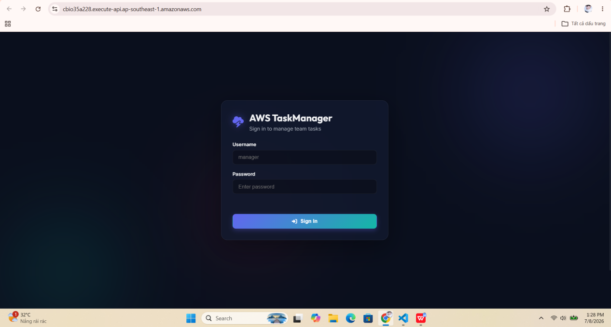
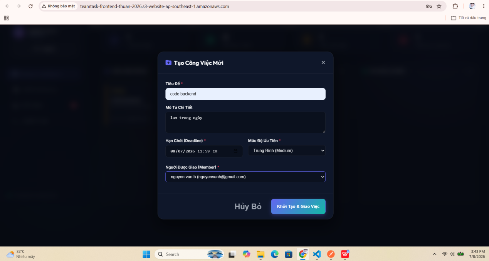
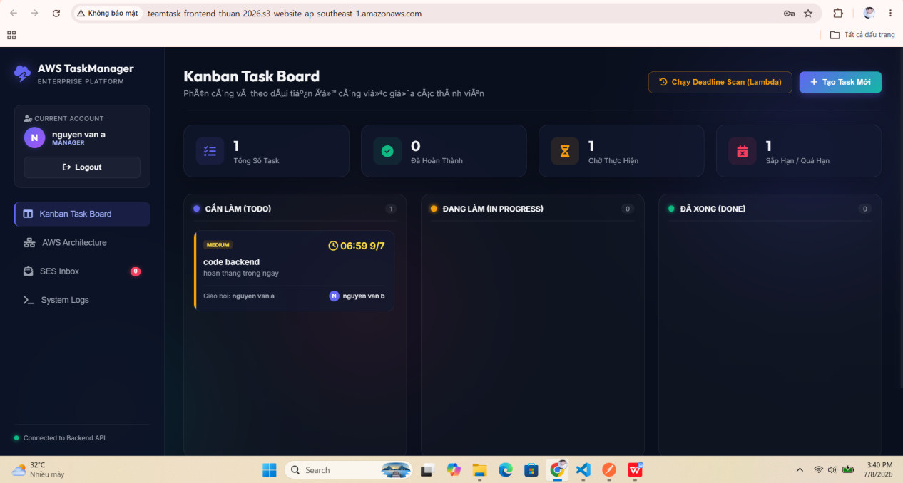
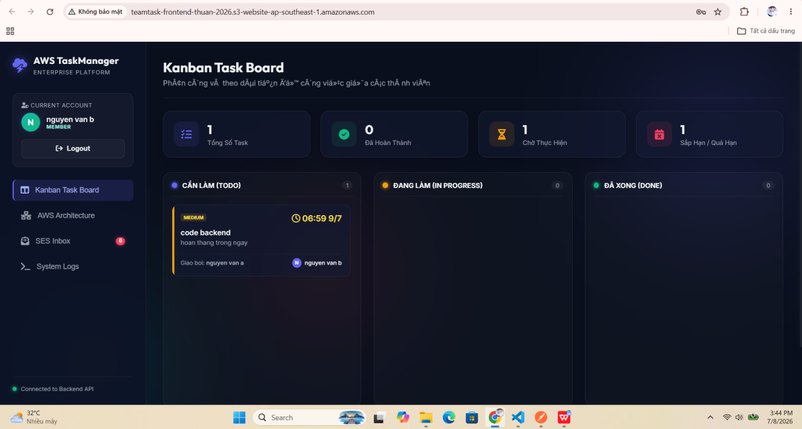
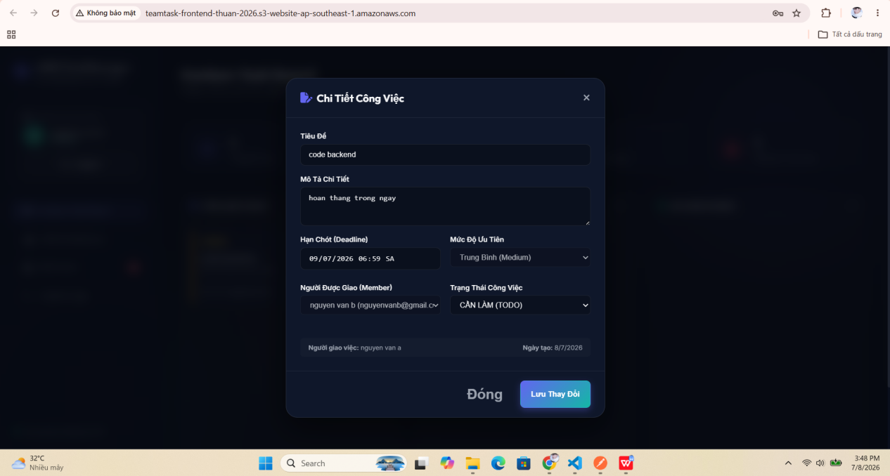
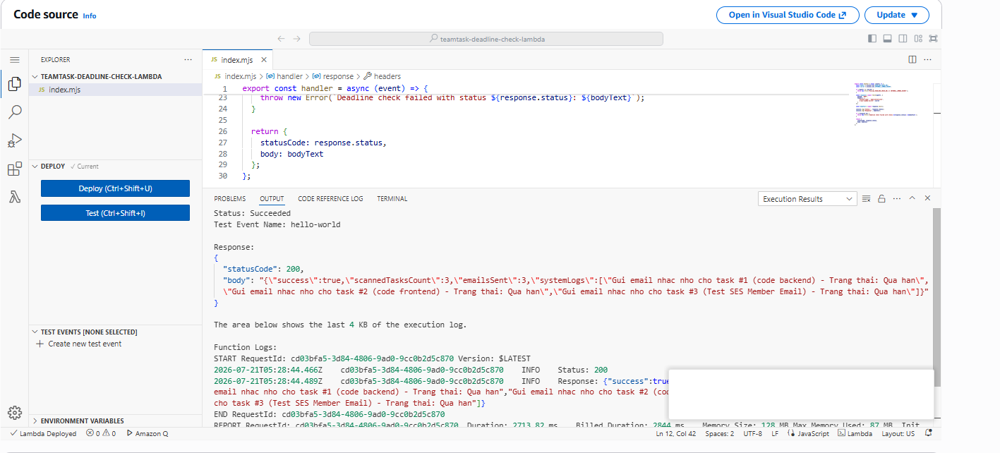
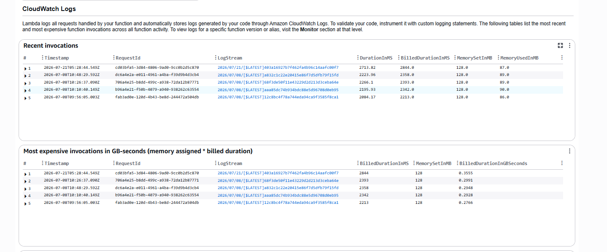
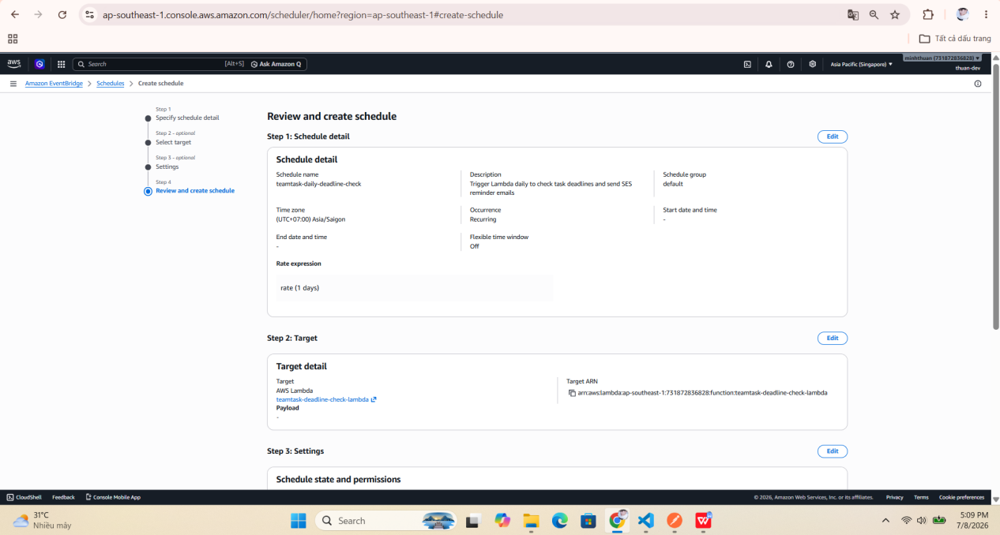
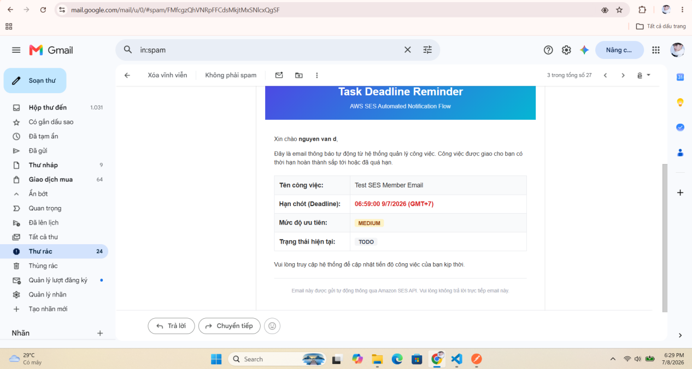
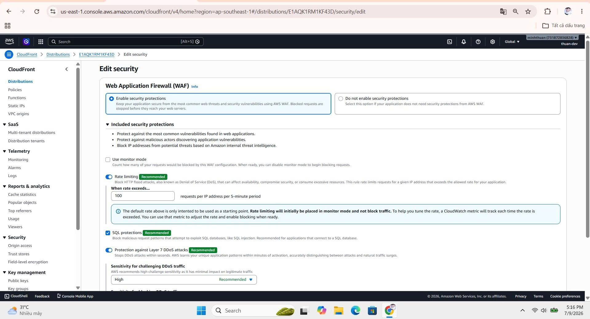

This section consolidates the post-deployment testing and verification of Team Task Management. The scope covers the user interface, Backend API connectivity, task creation and assignment, the deadline-check Lambda, Amazon SES email delivery, and AWS WAF protection for CloudFront. Each result is based on screenshots captured while completing the workshop.
Testing confirmed that the interface connects to the Backend API; a Manager can create and assign tasks, while a Member can sign in and view assigned work. The deadline-reminder flow also operates from the API, Lambda, and CloudWatch through email delivery by Amazon SES. At the edge-security layer, AWS WAF is enabled for CloudFront with rate limiting and SQL injection protection.
The screenshots below record the results of each part of the test flow.









